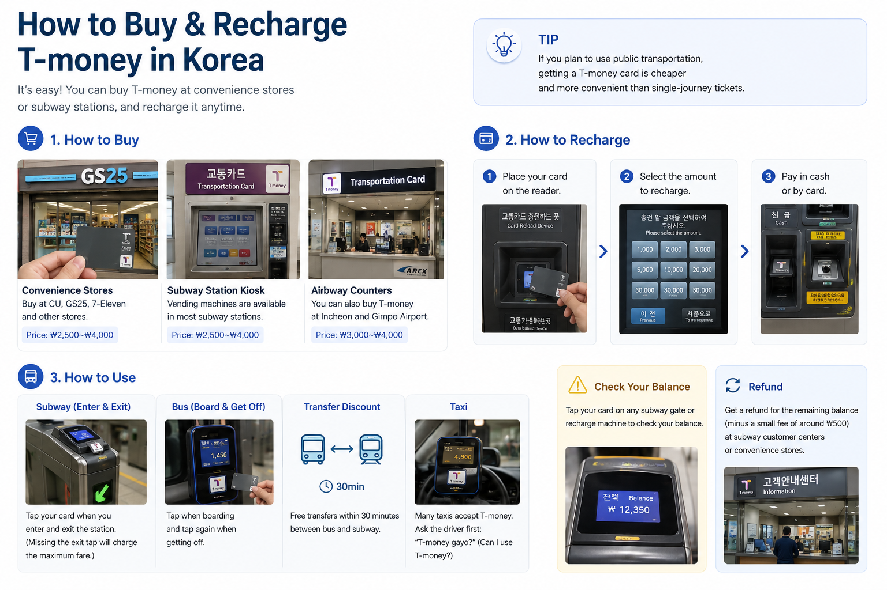
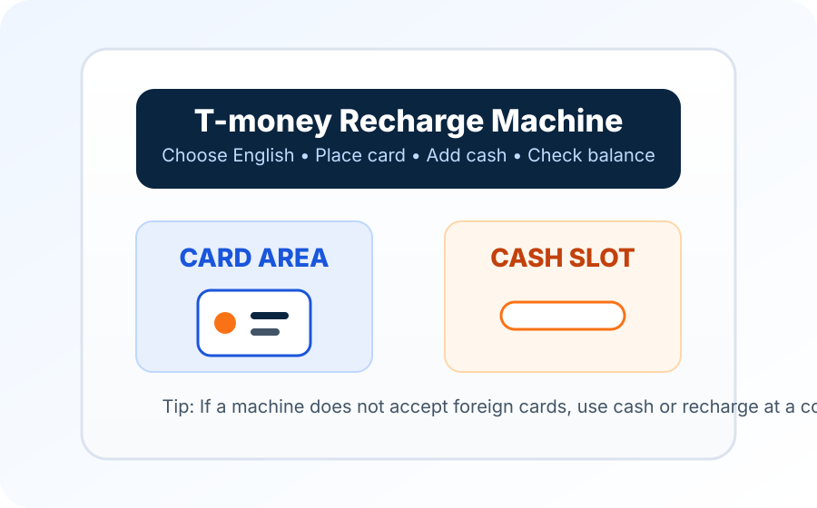

“ซื้อบัตรแล้ว แต่ gate บอกว่าไม่มีเงิน”
การซื้อ physical card กับการเติมเงินเดินทางเป็นคนละขั้น เอาไปเครื่องเติมหรือร้านสะดวกซื้อที่ร่วมรายการแล้วเติมวอนก่อนลอง gate ใหม่
นักท่องเที่ยวส่วนใหญ่ไม่จำเป็นต้องเข้าใจระบบจ่ายค่าโดยสารของเกาหลีทั้งหมด สิ่งที่ต้องการจริงคือบัตรหนึ่งใบที่ใช้งานได้หลังการเดินทางจากสนามบินจบและการเดินทางในเมืองเริ่ม บัตร T-money แบบจริงยังทำหน้าที่นี้ได้ดี: เติมเงินวอน แตะที่ gate หรือเครื่องอ่านบนรถบัส แล้วใช้บัตรใบเดิมต่อได้ในขนส่งสาธารณะจำนวนมากทั่วเกาหลี
ตั้งแต่เดือนกรกฎาคม 2025 ผู้ใช้ iPhone และ Apple Watch รุ่นที่รองรับสามารถใช้ T-money ผ่าน Apple Wallet ได้ แต่การซื้อหรือเติมเงินโดยตรงใน Wallet ยังต้องใช้บัตรเครดิตหรือเดบิตที่ออกในเกาหลีใต้ สำหรับนักท่องเที่ยวที่ใช้บัตรต่างประเทศ ยังมีอีกทางเลือกคือเติมเงินผ่านแอป MobileTmoney ด้วย Apple Pay เมื่อบัตรที่ใช้รองรับ หากโทรศัพท์หรือเครือข่ายบัตรของคุณไม่เข้าเงื่อนไข บัตร T-money แบบใบจริงยังเป็นทางเลือกที่ง่ายกว่า

เวอร์ชัน T-money ที่เหมาะขึ้นอยู่กับวิธีที่คุณเติมเงินเข้าได้ มากกว่าว่าเทคโนโลยีแบบไหนดูสะดวกกว่า
| Physical T-money | Apple Wallet T-money | KOREA TOUR CARD Tmoney app | |
|---|---|---|---|
| เหมาะกับใคร | นักท่องเที่ยวส่วนใหญ่ โดยเฉพาะคนที่มีแต่บัตรจ่ายเงินต่างประเทศ | ผู้ใช้ iPhone หรือ Apple Watch รุ่นที่รองรับ ซึ่งมีบัตรที่ออกในเกาหลีใต้สำหรับเติมผ่าน Wallet โดยตรง หรือมีบัตร Apple Pay จากเครือข่ายที่ MobileTmoney รองรับ | ผู้ใช้ Android NFC ที่เข้ากันได้และต้องการ mobile option |
| ได้มาอย่างไร | ซื้อบัตรหลังถึงเกาหลี | เพิ่ม prepaid T-money card ใน Apple Wallet | ออกและจัดการ T-money ผ่าน KOREA TOUR CARD Tmoney app |
| เติมเงินอย่างไร | เงินสดที่เครื่องเติมในสถานีหรือร้านสะดวกซื้อที่ร่วมรายการเป็น default ที่ปลอดภัยที่สุด | เติมตรงผ่าน Apple Wallet ต้องใช้บัตรเครดิตหรือเดบิตที่ออกในเกาหลีใต้ ส่วน MobileTmoney รองรับการเติมผ่าน Apple Pay ด้วยบัตร Mastercard, American Express, UnionPay หรือ JCB ที่ใช้งานร่วมกันได้ | แอปทางการปัจจุบันโฆษณาการเติมและ refund ด้วยบัตรต่างประเทศที่รองรับ |
| จุดที่ต้องระวัง | ต้องพกบัตรและอาจยังต้องใช้เงินสดเติม | การเติมตรงใน Wallet ยังต้องใช้บัตรที่ออกในเกาหลีใต้ ส่วน MobileTmoney รองรับบัตรต่างประเทศเฉพาะบางเครือข่าย และยังไม่มี Visa ในรายชื่อที่รองรับ | โทรศัพท์และ NFC compatibility สำคัญ ต้องเช็กแอปก่อนพึ่งเป็นบัตรหลัก |
สำหรับทริปสั้น การเลือกบัตรจริงไม่ได้ล้าสมัย มักเป็นเวอร์ชันที่ถามคำถามกับนักท่องเที่ยวต่างชาติน้อยที่สุด
คำแนะนำ VisitKorea ปัจจุบันระบุว่าซื้อ T-money ได้ที่ร้านสะดวกซื้อ เช่น GS25, CU และ 7-ELEVEN ทั่วประเทศ รวมถึง information center ในสถานีรถไฟใต้ดินโซลสาย 1–8 ราคาบัตรทั่วไปปัจจุบันอยู่ราว ₩3,000–₩5,000 แม้ราคาอาจต่างตาม design และผู้ขาย
สำหรับนักท่องเที่ยวส่วนใหญ่ ไม่จำเป็นต้องทำเรื่องนี้เป็น pre-trip purchase การซื้อหลังมาถึงมักตรงไปตรงมา มองหาโลโก้ T-money ที่ร้านสะดวกซื้อหรือสถานี แทนการไล่หาบัตรเวอร์ชันท่องเที่ยวพิเศษ
ราคาตัวบัตรกับเงินที่เก็บในบัตรเป็นคนละส่วน ถ้าซื้อบัตรแล้วเดินตรงไป gate โดยไม่เติม value ตัวบัตรเองไม่ได้ให้เที่ยวเดินทาง
แทบไม่มีเหตุผลให้เติมจำนวนมากตั้งแต่วันแรก
สำหรับทริปโซลระยะสั้น Korea Inside มักเริ่มราว ₩20,000–₩30,000 แล้วเติมเพิ่มทีหลัง นี่เป็นคำแนะนำเพื่อวางแผน ไม่ใช่กฎทางการของ T-money ค่าใช้จริงขึ้นอยู่กับจำนวนเที่ยว ระยะทาง และว่าคุณใช้ยอดในร้านที่ร่วมรายการด้วยหรือไม่
เริ่มจากยอดเล็กยังทำให้ช่วงท้ายทริปง่ายกว่า บัตรที่เหลือไม่กี่พันวอนจัดการง่ายกว่าบัตรที่เหลือยอดมากแล้วต้องรีบ refund ก่อนสนามบิน
สำหรับ T-money แบบ physical ทั่วไป เงินสดยังเป็น default ที่ปลอดภัยที่สุดสำหรับนักท่องเที่ยวต่างชาติ เครื่องเติมในรถไฟใต้ดินใช้งานไม่ยากเมื่อรู้ช่องใส่เงิน และร้านสะดวกซื้อที่ร่วมรายการก็เติมได้
อย่าสับสนกับเครื่อง transit kiosk รุ่นใหม่ของโซลที่รับบัตรต่างประเทศ ในปี 2026 โซลขยายการจ่ายด้วยบัตรเครดิต/เดบิตต่างประเทศที่ kiosk ใหม่สำหรับผลิตภัณฑ์ เช่น Climate Card แบบระยะสั้นและตั๋วเที่ยวเดียว แต่นั่นไม่ได้หมายความว่าเครื่องเติม T-money ปกติทุกเครื่องรับบัตรต่างประเทศแล้ว
ถ้าเครื่องปฏิเสธบัตร ไม่ต้องลองวิธีเดิมซ้ำ ใช้เงินวอนหรือเอาบัตรไปเติมที่ร้านสะดวกซื้อที่ร่วมรายการ
ยอดที่แสดงบน gate หรือเครื่องเติมเพียงพอสำหรับนักท่องเที่ยวส่วนใหญ่ เติมเมื่อยอดเริ่มต่ำ แทนการคำนวณทั้งทริปล่วงหน้า


หลังเที่ยวแรก ขั้นตอนรถไฟใต้ดินง่าย: แตะตอนเข้าและแตะอีกครั้งตอนออก การแตะออกปิดเที่ยวและให้ระบบคำนวณค่าโดยสาร
รถบัสก็ใช้ habit เดียวกัน แตะตอนขึ้น และแตะอีกครั้งก่อนลง
การแตะครั้งที่สองบนรถบัสลืมง่ายเพราะประตูเปิดและทุกคนกำลังลง แต่สำคัญเพราะส่วนลดการต่อรถต้องรู้ว่าการเดินทางหนึ่งจบตรงไหนแล้วอีกเที่ยวเริ่ม
เมื่อ transfer ถูกต้องระหว่างรถบัสกับรถไฟใต้ดินที่เข้าเกณฑ์ T-money จะคำนวณส่วนลดอัตโนมัติ Window ละเอียดต่างตามระบบและเวลา คู่มือนี้ไม่จำเป็นต้องเปลี่ยน habit ง่ายๆ ให้เป็น timetable: แตะให้ถูกทุกครั้ง
รถไฟใต้ดินและ city bus คือเหตุผลหลักที่นักท่องเที่ยวซื้อ T-money แต่เครือข่ายกว้างกว่าโซล
คู่มือใช้งานทางการปัจจุบันของ T-money ระบุ coverage รถไฟใต้ดินและรถบัสในหลายภูมิภาคของเกาหลี รวมระบบ metropolitan หลัก และยังระบุการรับในแท็กซี่ของหลายเมือง/เขต
การจ่ายแท็กซี่ไม่ได้เหมือนกันทั้งหมด T-money เองเตือนว่าบางพื้นที่มีข้อจำกัด ดังนั้นดู card reader หรือเครื่องหมาย T-money มีประโยชน์กว่าคิดว่าแท็กซี่ทุกคันรับยอดนี้
T-money ยังใช้กับร้านและ partner บางแห่งที่มีเครื่องหมายรับ T-money ได้ มีประโยชน์กับการซื้อในร้านสะดวกซื้อเป็นครั้งคราว แต่ควรมองเป็นบัตรขนส่งที่มี payment use เพิ่ม มากกว่าจะใช้แทน debit/credit card ปกติ
Express bus, intercity transport, rail counter และ toll-road บางกรณีก็รองรับ T-money product/card บางประเภท แต่กฎเฉพาะกว่ามาก สำหรับการวางแผนทั่วไป รถบัสกับรถไฟใต้ดินคือ core ที่เชื่อถือได้
Apple และ T-money เปิด T-money ใน Apple Wallet เมื่อ 21 กรกฎาคม 2025 iPhone หรือ Apple Watch ที่รองรับสามารถทำหน้าที่เป็น prepaid T-money transit card ได้แล้ว ดังนั้นคำแนะนำเก่าที่ว่า iPhone ใช้ T-money บนโทรศัพท์ไม่ได้จึงไม่ถูกต้องอีกต่อไป
Apple ปัจจุบันระบุ iPhone Xs/Xr หรือใหม่กว่าพร้อม iOS 17.2 ขึ้นไป และ Apple Watch Series 6 หรือ Apple Watch SE รุ่น 2 ขึ้นไปพร้อม watchOS 10.2 ขึ้นไป Apple Wallet รองรับเฉพาะ prepaid T-money
เมื่อเปิด Express Mode คุณแตะอุปกรณ์ที่ transit reader ได้โดยไม่ต้องเปิด Wallet ทุกครั้ง และดูยอดได้ใน Wallet
จุดที่สำคัญที่สุดสำหรับนักท่องเที่ยวต่างประเทศคือ funding คำแนะนำ support ของ Apple ปัจจุบันระบุว่าต้องใช้บัตรเครดิตหรือเดบิตที่ออกในเกาหลีใต้เพื่อซื้อหรือเติม T-money จาก Apple Wallet
สำหรับผู้ใช้บัตรต่างประเทศ แอป MobileTmoney เป็นอีกช่องทางหนึ่ง ข้อมูลใน App Store ระบุว่าใช้งานพื้นฐานได้โดยไม่ต้องสมัครสมาชิก และเติมเงินผ่าน Apple Pay ด้วยบัตรเครือข่าย Mastercard, American Express, UnionPay หรือ JCB ที่รองรับได้ โดยปัจจุบันยังไม่ระบุ Visa เป็นเครือข่ายที่ใช้เติมเงินผ่านช่องทางนี้
ดังนั้น การมี iPhone ไม่ได้หมายความว่าจะเติม T-money ได้ด้วยบัตรทุกใบ หากเครือข่ายบัตรที่ผูกกับ Apple Pay ของคุณไม่อยู่ในรายชื่อที่ MobileTmoney รองรับ ควรเตรียมบัตร T-money แบบใบจริงหรือวิธีเติมเงินสำรองที่ยืนยันว่าใช้ได้
T-money หนึ่งใบใช้บน Apple device ได้ทีละเครื่อง หากอยากมี transit card แยกบน iPhone และ Apple Watch Apple ระบุว่าแต่ละ device ต้องมี card ของตัวเอง
T-money ยังให้บริการ KOREA TOUR CARD Tmoney app สำหรับโทรศัพท์ Android ที่เข้ากันได้
รายการ Google Play ทางการปัจจุบันระบุว่าแอปใช้ NFC เป็น T-money ดู balance และ transaction history และจัดการ top-up/refund ผ่านบัตรต่างประเทศที่รองรับ เช่น Mastercard, Visa, American Express, JCB และ UnionPay
Seoul Metropolitan Government ยังอ้างถึง KOREA TOUR CARD app เป็นช่องทางเติมด้วย overseas card สำหรับนักท่องเที่ยว Android
คำว่า compatible สำคัญ NFC hardware, phone configuration และ app support ต่างกันได้ ติดตั้งและเช็กแอปก่อนคิดว่าจะใช้โทรศัพท์เป็นบัตรขนส่งใบเดียวในเกาหลี
เด็กหรือวัยรุ่นไม่ควรใช้บัตร T-money ผู้ใหญ่แล้วคาดหวังว่าส่วนลดจะเกิดเอง
คำแนะนำ VisitKorea ปัจจุบันระบุว่านักท่องเที่ยวอายุต่ำกว่า 18 ปีต้องลงทะเบียนวันเกิดเพื่อรับส่วนลดขนส่งสาธารณะที่เกี่ยวข้อง ร้านสะดวกซื้อที่จัดการ T-money เป็นจุดที่ใช้งานจริงสำหรับถามเรื่อง registration ตอนซื้อ
ถ้าเดินทางเป็นครอบครัว ทำเรื่องนี้ช่วงต้นทริป แทนการมารู้หลังนั่งไปหลายเที่ยวว่าบัตรคิด adult fare
ยอดไม่พอมักเป็นความไม่สะดวก ไม่ใช่ disaster
เครื่องเติมและ gate รถไฟใต้ดินจำนวนมากแสดงยอดที่เหลือ คำแนะนำทางการของ Seoul subway ยังระบุว่ามี fare-adjustment machine ใกล้ gate สำหรับกรณี T-money balance ไม่พอ
ถ้าเห็นว่ายอดใกล้หมดก่อนเที่ยวไกล เติมนอก gate ง่ายกว่าจัดการตอนมีคนรออยู่ข้างหลัง
คืนยอด T-money ได้ แต่หัวข้อนี้เป็นจุดที่ travel page เก่าทำให้สับสนได้
ณ การตรวจเดือนสิงหาคม 2026 VisitKorea ระบุว่ายอด T-money มากกว่า ₩50,000 ต้อง refund ที่ Tmoney Town ใกล้ Seoul Station ส่วนยอดที่น้อยกว่าสามารถทำที่ร้านสะดวกซื้อได้ หน้า tourism ทางการของ Seoul บางหน้าเก่ายังแสดง threshold ที่ต่ำกว่า
ด้วยเหตุนี้ Korea Inside ไม่แนะนำให้วางแผน refund ก้อนใหญ่จากตัวเลขเก่าในบล็อกหรือ screenshot เช็ก T-money หรือ VisitKorea ปัจจุบันถ้าเหลือยอดมาก
กลยุทธ์ที่ง่ายกว่าคือหยุดเติมก้อนใหญ่ใกล้จบทริป เหลือพอสำหรับรถบัส รถไฟใต้ดิน และสนามบิน แล้วใช้ยอดลงตามธรรมชาติ
Balance refund กับราคาตัวบัตรตอนซื้อเป็นคนละเรื่อง อย่าคิดว่าคืนบัตรแล้วจะได้เงินกลับทุกวอนที่จ่ายไป
การซื้อ physical card กับการเติมเงินเดินทางเป็นคนละขั้น เอาไปเครื่องเติมหรือร้านสะดวกซื้อที่ร่วมรายการแล้วเติมวอนก่อนลอง gate ใหม่
สำหรับ T-money แบบจริงทั่วไป เงินสดยังเป็น default ที่ปลอดภัย เครื่องรุ่นใหม่ที่รับ international card ของโซลไม่ควรถูกใช้เป็นหลักฐานว่าเครื่อง T-money ทุกเครื่องรับบัตรต่างประเทศ
การแตะออกมีผลกับ transfer ทำให้เป็น habit ทุกครั้ง แม้จะไม่ได้ต่อรถทันที
แท็กซี่รับกว้างแต่ไม่ universal คู่มือ T-money เองระบุว่าบางพื้นที่มี restriction ใช้วิธีจ่ายอื่นถ้ารถคันนั้นประมวลผลบัตรไม่ได้
Apple Wallet ใช้กับ T-money ได้แล้ว แต่การซื้อหรือเติมเงินโดยตรงผ่าน Wallet ยังต้องใช้บัตรเครดิตหรือเดบิตที่ออกในเกาหลีใต้ ผู้ใช้บัตรต่างประเทศอาจเติมผ่าน MobileTmoney ด้วย Apple Pay ได้หากเป็นเครือข่ายที่รองรับ โดยปัจจุบันไม่มี Visa ในรายชื่อดังกล่าว
ดู balance refund ได้ แต่ refund location และ amount limit ซับซ้อนกว่าการใช้บัตร ช่วงท้ายทริปเติมทีละน้อยมักง่ายกว่า
มองหาเครื่องหมาย T-money หรือถามก่อนจ่าย Retail use เป็นฟังก์ชันเสริมที่ดี แต่ไม่ใช่เหตุผลให้พึ่ง T-money เป็นวิธีจ่ายเดียว
ถ้าปัญหาหลักคือขนส่ง T-money ยังเป็นผลิตภัณฑ์ที่ง่ายกว่า
WOWPASS มีเหตุผลมากขึ้นเมื่อคุณต้องการ Korean prepaid payment balance, foreign-currency funding และฟังก์ชันจัดการบัตรด้วย T-money transport function อยู่ในบัตรเดียวกัน แต่ WOWPASS payment balance กับ T-money balance ยังแยก
ถ้ารู้แล้วว่าจะใช้ WOWPASS คู่มือ WOWPASS อธิบายสองยอดเงินในการใช้งานจริง
T-money เป็นบัตรขนส่งแบบเติมเงินที่ใช้ในเครือข่ายขนส่งสาธารณะจำนวนมากทั่วเกาหลี ใช้แพร่หลายในรถไฟใต้ดินและรถบัส และใช้ได้กับแท็กซี่จำนวนมากกับร้านที่ร่วมรายการ
คำแนะนำ VisitKorea ปัจจุบันระบุร้านสะดวกซื้อ เช่น GS25, CU และ 7-ELEVEN ทั่วประเทศ และ information center ในสถานีรถไฟใต้ดินโซลสาย 1–8 มองหาโลโก้ T-money เพราะ stock และ design ต่างกันตามจุด
VisitKorea ปัจจุบันระบุ physical T-money ทั่วไปราว ₩3,000–₩5,000 design หรือผลิตภัณฑ์พิเศษอาจราคาแตกต่าง และราคาบัตรแยกจาก balance ที่เติมเพื่อเดินทาง
เงินสดที่เครื่องเติมในสถานีหรือร้านสะดวกซื้อที่ร่วมรายการเป็นวิธีที่คาดเดาได้ที่สุดสำหรับนักท่องเที่ยวต่างชาติ อย่าคิดว่าเครื่องทุกเครื่องรับ overseas credit/debit card
อย่าพึ่งเป็น default โซลเพิ่ม international-card support ที่ subway kiosk รุ่นใหม่สำหรับผลิตภัณฑ์ เช่น Climate Card แบบระยะสั้นและตั๋วเที่ยวเดียว แต่ไม่ควรตีความว่า ordinary physical T-money recharge รองรับ overseas card ทุกเครื่อง
ได้ ตั้งแต่วันที่ 21 กรกฎาคม 2025 iPhone และ Apple Watch รุ่นที่รองรับสามารถใช้ T-money แบบเติมเงินใน Apple Wallet ได้ แต่การซื้อหรือเติมเงินโดยตรงใน Wallet ยังต้องใช้บัตรเครดิตหรือเดบิตที่ออกในเกาหลีใต้ ผู้ใช้บัตรต่างประเทศยังมีทางเลือกเติมผ่านแอป MobileTmoney โดยใช้ Apple Pay กับบัตร Mastercard, American Express, UnionPay หรือ JCB ที่รองรับ ปัจจุบัน Visa ไม่อยู่ในรายชื่อเครือข่ายที่รองรับช่องทางนี้
KOREA TOUR CARD Tmoney app มี mobile T-money option สำหรับ Android NFC ที่เข้ากันได้ และปัจจุบันโฆษณา top-up/refund ด้วยเครือข่ายบัตรต่างประเทศหลายแบบ ต้องเช็ก device compatibility ก่อนพึ่ง
ต้องแตะตอนเข้าและออกรถไฟใต้ดิน ส่วนรถบัสแตะตอนขึ้นและก่อนลง การแตะออกจากรถบัสมีผลกับ transfer discount
แท็กซี่จำนวนมากและร้านที่ร่วมรายการรับ T-money แต่ไม่ universal เช็กเครื่องหมายหรือ payment terminal โดยเฉพาะแท็กซี่นอกเมืองใหญ่
ไม่มีจำนวนเดียวสำหรับทุกทริป Korea Inside มักเริ่มราว ₩20,000–₩30,000 สำหรับทริปโซลสั้น แล้วเติมเพิ่มทีหลัง แทนการค้างยอดใหญ่ตั้งแต่วันแรก
ได้ ภายใต้ refund rule และ outlet limit ปัจจุบัน ณ สิงหาคม 2026 VisitKorea ระบุว่ายอดมากกว่า ₩50,000 จัดการที่ Tmoney Town ใกล้ Seoul Station ส่วนยอดต่ำกว่าทำที่ร้านสะดวกซื้อได้ เช็กคำแนะนำล่าสุดก่อนพึ่งจุดเฉพาะ
ถ้าต้องการหลักๆ รถบัสและรถไฟใต้ดิน T-money มักง่ายกว่า WOWPASS มีประโยชน์มากขึ้นเมื่อยังต้องการ prepaid shopping payment, foreign-currency funding และ app-based card management ดูคู่มือ Korea Inside T-money vs WOWPASS สำหรับการเปรียบเทียบเต็ม
ข้อมูลการรับรถไฟใต้ดิน รถบัส แท็กซี่ และขนส่งอื่นปัจจุบัน
จุดซื้อสำหรับนักท่องเที่ยว ราคาบัตรทั่วไป การเติม และ refund
วันเปิดตัว อุปกรณ์ที่รองรับ Express Mode และข้อกำหนด funding
ข้อกำหนดปัจจุบันในการซื้อ/เติม T-money ใน Apple Wallet ด้วยบัตรออกในเกาหลีใต้
ข้อมูลแอปสำหรับผู้ใช้ต่างประเทศและการเติมเงินผ่าน Apple Pay ด้วยบัตร Mastercard, American Express, UnionPay และ JCB โดยปัจจุบันยังไม่ระบุ Visa ว่ารองรับ
ขอบเขตปี 2026 ของ international-card acceptance ที่ subway kiosk ใหม่
แอป Android สำหรับนักท่องเที่ยว NFC และ network บัตรต่างประเทศที่ระบุสำหรับ funding
ตรวจสอบข้อมูลทั่วไปของหน้า: สิงหาคม 2026 · ตรวจสอบเงื่อนไข MobileTmoney สำหรับผู้ใช้ต่างประเทศ: 11 ตุลาคม 2026
วิธีจ่าย refund outlet device support และ transit acceptance ของ T-money เปลี่ยนได้ เมื่อบัตร โทรศัพท์ หรือจุด refund เฉพาะมีผลกับทริป ให้ใช้คำแนะนำปัจจุบันของ T-money, Apple หรือหน่วยงานท่องเที่ยวทางการ แทน screenshot เก่า